ADAS Datasets - Examples of Labelled Data
This section will present some relevant work and its results in public labelled datasets used in other ADAS projects.
KITTI Dataset.
Berkeley DeepDrive Dataset
HumanEva II Dataset
ETHZ Dataset
EPFL Dataset
Datasets
On this section we give an insight into each and every one of the datasets, explaining how they work and how they were created.
KITTI Dataset
Probably the most well-known dataset in the fields of AD is the KITTI (Karlsruhe Institute of Technology 2018). The KITTI dataset was captured with a Volkswagen station wagon used in mobile robotics and AD research. The KITTI benchmark suite started in 2012 at Karlsruhe Institute of Technology with the need to have a dataset to classify objects on the streets. This project has grown by increasingly adding more results with more sensors. The KITTI benchmark started with the stereo, flow and odometry benchmarks and today it includes standards for object tracking and more. Just like ATLASCAR 2, the car used in the KITTI dataset is equipped with LIDAR sensors and Point Grey Video Cameras. The dataset is used for automatic recognition and tracking of vehicles and pedestrians. It consists in image sequences and a text file in which, for each frame the various objects in the field of view are depicted with and identification number, a label, and coordinates about their position in the 2D and 3D space (Geiger et al. 2013). The development kit used for the KITTI database contains C++ and MATLAB code to read the sensor data and write dataset results. The data development kit used is provided on the KITTI Website (Karlsruhe Institute of Technology 2018). It contains a MATLAB demonstration code with C++ wrappers
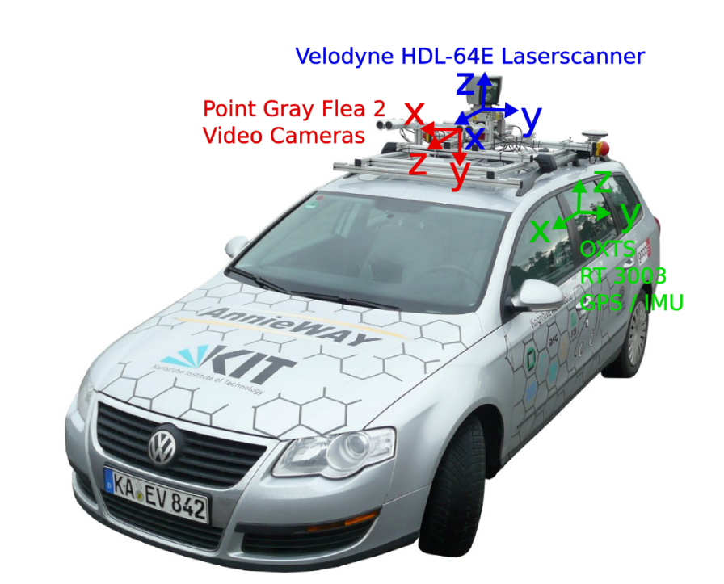 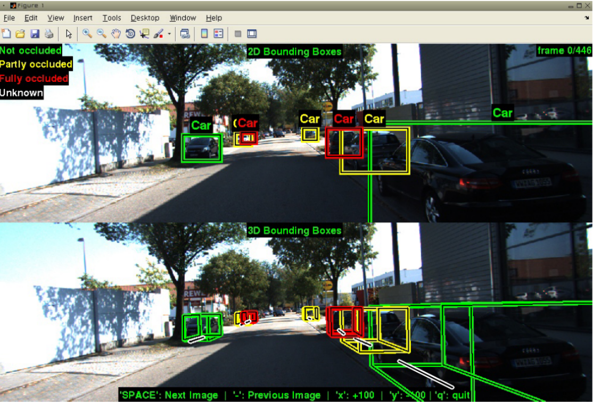 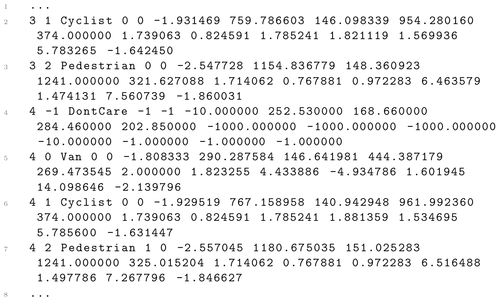
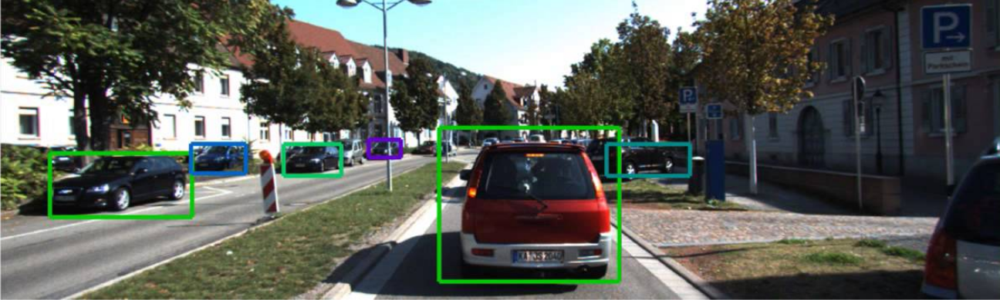
The demonstration script of the KITTI development kit shows how 3D boxes can be read from the dataset files and projected into the image plane of the cameras. The data is processed and inserted into MATLAB structures and arrays. The KITTI database also uses the PCL to process and gather the pointclouds obtained from the LIDAR sensors. The data is stored in snippets like the example seen above, in which, each line starts with the frame ID and the ID of the object being tracked. Then it is added a label to classify this object. There are also flags to indicate if the object is either truncated or occluded in the image sequence. The following numbers consist in the alpha (observation angle of object), the left, top, right and bottom of the 2D bounding box, the height, width and length of the 3D bounding box and its XYZ coordinates. The last number consists in the 3D rotation angle in the Y axis (Boston Didi Team 2018). Analyzing the snippet, a cyclist and a pedestrian can be located in frame 3 and the same cyclist and pedestrian (because they have the same object id) in the next frame with also a van. The DontCare label is often shown representing an object detected that is not related to the scope of the KITTI dataset. Other information indicate where these objects are found relatively to the car.
Berkeley DeepDrive Dataset
The DeepDrive Dataset is a recent ADAS labelled dataset from the University of California, Berkeley. The Dataset consists of box annotations, region annotations and detection of objects, lanes and drivable areas (Yu et al. 2018). The only source data for each dataset is a video captured with a camera on a vehicle. Their labelling system is a web-based tool
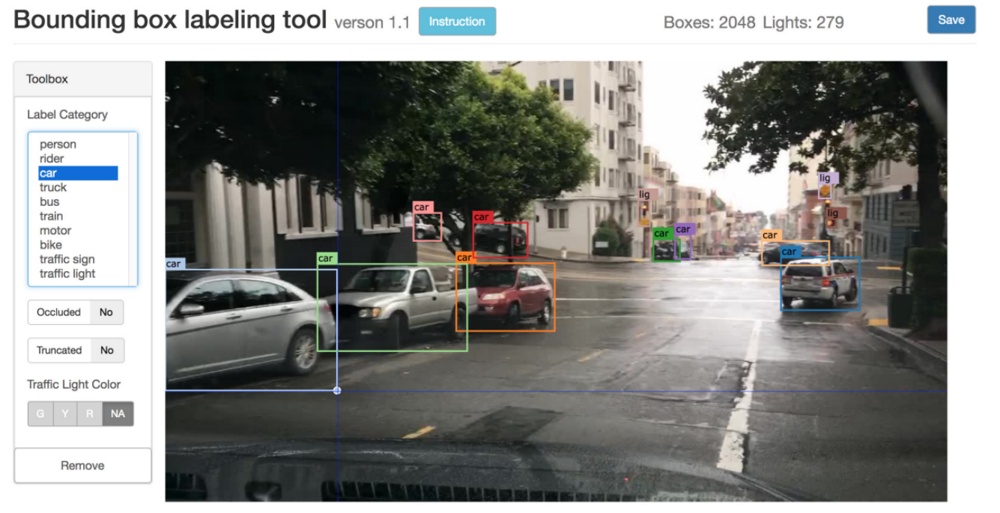
The labelling has a semi-automatic and a manual mode. In this annotation application the objects of interest are suggested with a bounding box and a category (label). The size of the bounding box and the category can be edited if the system fails. The objects are detected using a previously trained object detection model. The data is stored in the following snipet presented in the JSON format:
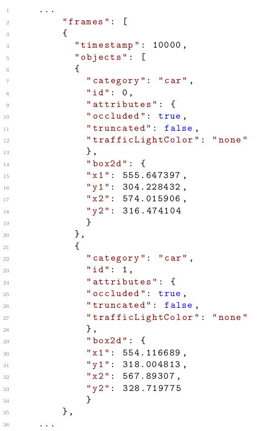
For each frame there is a timestamp and a set of objects. Each object is identified with a category, an ID, attributes that indicate if the object is occluded, truncated, and if the object is a traffic light which light color is on. The position is represented by the 2D bounding box position (x1, y1, x2, y2).
HumanEva II Dataset
The HumanEva II Dataset from the Max Planck Institut Informatik (MPII) was also an interesting dataset, although it is used mainly for pedestrian detection. This dataset appears with the need to represent information about detection and tracking of humans and their poses captured by a single image camera. The HumanEva dataset development kit includes several MATLAB modules, each one implementing a feature. Some modules refer to the body pose, others to image stream processing, writing the dataset results, and so on. Each script implements a chunk of the system that gathers the data and shapes it into MATLAB structures to be processed and to create the dataset. The HumanEva dataset has information about the bounding boxes position used to track and detect pedestrian limb poses. This information is useful to know which direction the person is facing from the 3D skeleton derived from the pose. The data structure in the dataset is similar to a XML file. For each frame in the image sequences there are several bounding boxes with the respective coordinates (Sigal et al. 2009). From this we can generate a dataset snippet from a certain image
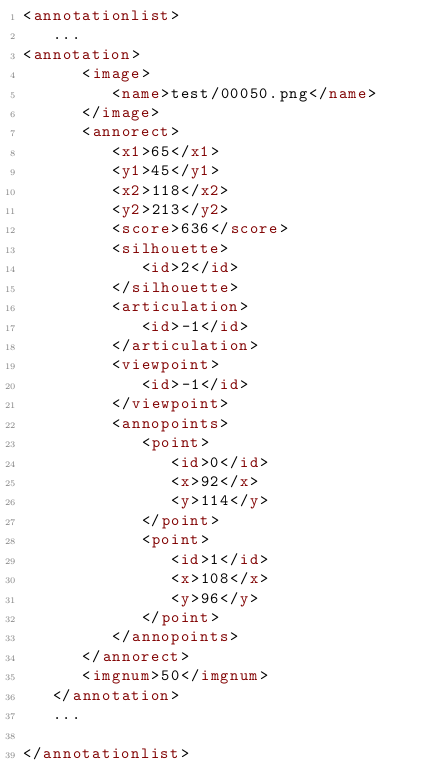
By looking at this dataset snippet it is easy to identify the interest points in the given frame. The files are a set of annotations called annotationList in which a path to the image corresponding to the frame is given. For each image there are several bounding boxes with coordinates (x1, y1, x2, y2), a score, silhouette, articulation and viewpoint id.ETHZ Dataset
ETHZ conducted studies for detection and tracking of people on the street (Ess et al.2009). Just like the previous datasets, its creation is based in MATLAB scripts and the data is gathered and stored in MATLAB structures. The dataset is simple: for each frame there are several bounding boxes in the image. This dataset is focused only in the detection and tracking of pedestrians in the image(ETHZ (Eidgenössische Technische Hochschule Zürich) 2018). In the snippet, each line is composed with a string defining a path to the image representing the actual frame, followed bytuples of four elements (x1, y1, x2, y2) representing the bounding boxes where pedestrians are found in the respective frame.
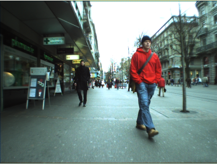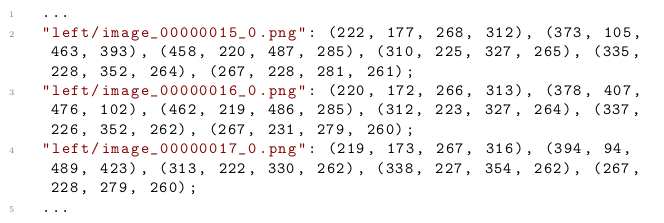
EPFL Dataset
The EPFL designed a dataset for multiple people in a camera environment, independent of the scenario. This dataset used various synced video cameras filming the same area in different angles (Biliotti, Antonini and Thiran 2015). The data from the cameras is captured and processed with MATLAB scripts and some algorithms in C++.
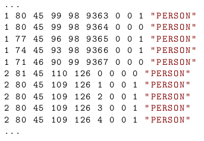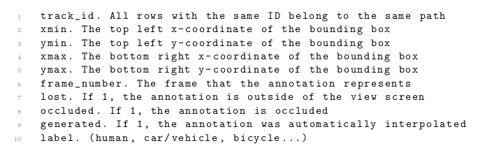
The dataset includes, for each frame, various objects identified with a number, a label, bounding box coordinates, and flags to point out if the person is occluded, lost, or if the detection was automatically interpolated from the other camera’s information (EPFL (École polytechnique fédérale de Lausanne) 2018). The particularity of the structure of this dataset is that, for each object, it is tracked in the image sequences individually, and only then another object is tracked and labeled.
Resume
To summarize this section, after analyzing these datasets and how they are created, it is important to look at what is stored in the data structures . Some datasets use well known data structures such as XML (HumanEva) or JSON (DeepDrive), and some datasets use their own set of data where each line corresponds to an entry. To design a dataset for the ATLASCAR it is necessary to decide which construction to use. To simplify the complexity of the files, an adapted approach used in the KITTI dataset will be used, where each line is an entry for a different object. Analyzing the datasets, the most common and relevant information in all files is the position of the targets, their classification and identification. So it is fundamental for the ATLASCAR dataset to contain, for each frame, 2D and 3D coordinates of the target, a label, and an identification number. Regarding the labelling system, it would be interesting to implement an interface that suggests the user objects of interest similar to the DeepDrive annotation tool.